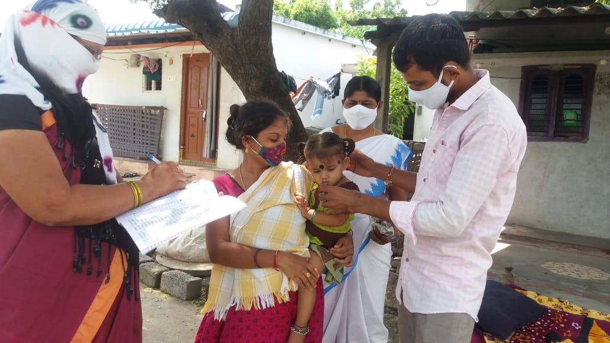
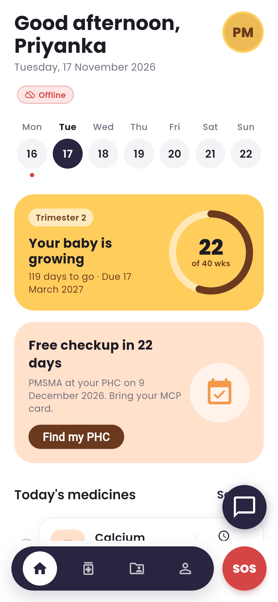
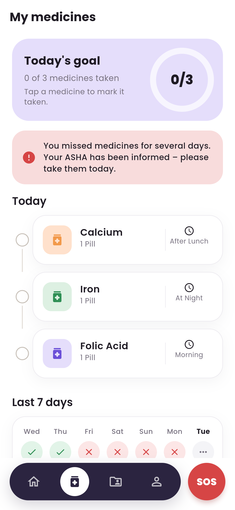
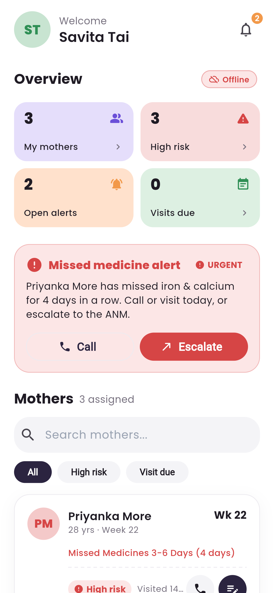
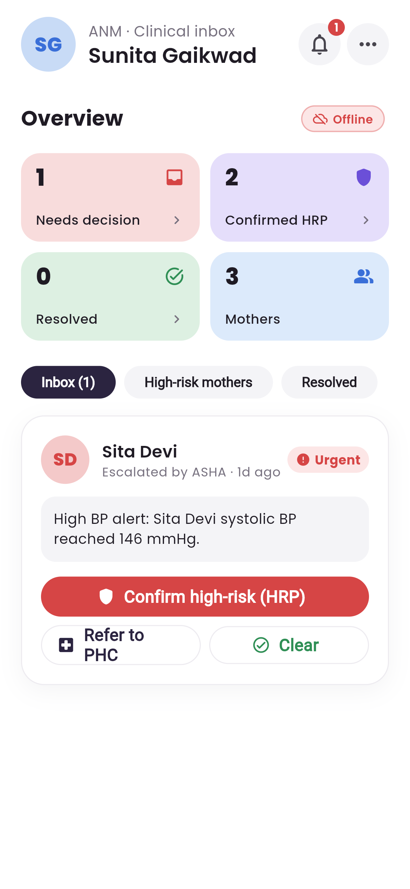
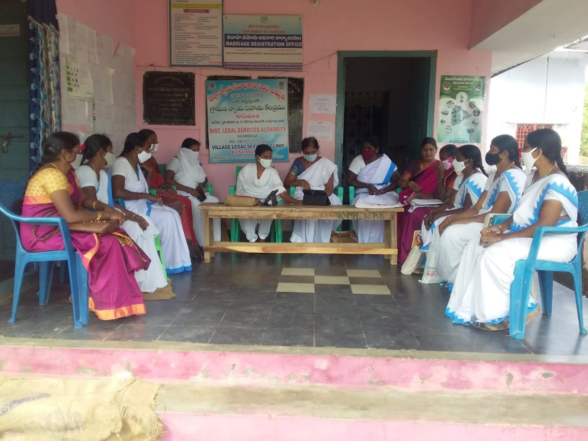

JANANI.
Early risk detection & closed-loop care for safer pregnancies

01The problem
~22,500 deaths a year
India records 88 maternal deaths per 100,000 live births — roughly one every 25 minutes.
Missed ANC visits
Full antenatal care coverage is lowest among rural, tribal and poor women.
No continuous monitoring
BP, Hb and weight sit on paper cards — never analysed as a trend.
The three delays
In recognising danger, in reaching a facility, and in receiving care.
Iron reaches mothers — but not for long enough
Coverage falls at every step of the antenatal journey
02The closed loop: from a missed tablet to a PHC decision
Janani closes the three delays — early recognition of risk, quick access to care, and health workers alerted before the mother arrives.
Mother skips iron
Ticks medicines daily on her phone — or doesn't
Risk is rescored
3 days missed raises her score, with reasons
Alert reaches ASHA
Urgent alert, synced the moment there is signal
ASHA calls or visits
Logs the visit; escalates if needed
ANM decides
Confirms high-risk, clears, or refers
PHC acts
Doctors see only ANM-confirmed high-risk cases
03Working prototype

Mother · Home
Week, checkup, medicines

Medicine tracker
Tap to take · 7-day adherence

ASHA dashboard
Sorted by risk, with reasons

ANM inbox
Confirm HRP · refer · clear
04Who uses it

Pregnant womenprimary
Track medicines, report symptoms, get help
ASHA workersprimary
Visit, record vitals, act on alerts
ANM / midwifesecondary
Confirms, clears or refers cases
PHC doctorssecondary
Review the confirmed high-risk registry
Family caregiver
Reminders, with the mother's consent
05Key features
Explainable risk engine
MoHFW high-risk pregnancy rules; every alert shows why
Medicine adherence
Daily checklist; 3 missed days alert the ASHA
Danger signs & SOS
Report symptoms, call 108 or the ASHA, SMS without data
ANC & PMSMA reminders
Free checkup countdown, TT/Td schedule
Month-by-month diet
Local foods, in Marathi, Hindi and English
06System architecture
Flutter app — 5 roles
Offline-first · Hive sync outbox · 3 languages
Supabase backend
Postgres · OTP login · RLS · Realtime
Risk engine
MoHFW rules · on-device + SQL · 32 tests
Escalation ladder
Phase 2 · SMS & voice alerts · RCH ID integration
07What's different?
| Paper card | RCH & ANMOL | Janani | |
|---|---|---|---|
| Daily adherence signal | |||
| Reasons shown with alerts | |||
| ASHA → ANM → PHC chain | |||
| Family caregiver role | |||
| Works offline |
● full ◐ partial ○ none — based on public documentation of RCH and ANMOL. Janani complements them and can link via the RCH ID.
08Impact & feasibility
Early detection
Risk flagged days earlier
ANC compliance
Checkup & iron nudges
Lower risk
Faster escalation
Coordination
One view for the team
Real demand
Fits ASHA & PHC network
Feasible
Low-cost phones, offline
Scalable
Pilot → district → state